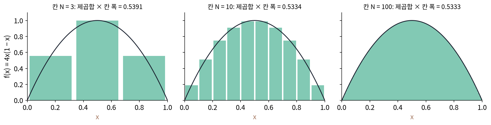

파스발 등식: 직각인 축에서는 제곱합이 그대로
신호의 크기를 숫자 하나로 말하고 싶을 때 칸 값의 제곱합을 흔히 쓴다. 소리라면 제곱합이 클수록 센 소리다. (3, 1, 2)의 제곱합은 9 + 1 + 4 = 14다. 같은 신호를 평균·기울기·굽음 좌표 (2, −0.5, 0.5)로 다시 적었으니 크기도 좌표에서 읽을 수 있어야 할 것 같다. 그런데 좌표의 제곱합은 4 + 0.25 + 0.25 = 4.5다. 14와 다르다. 다시 적으면서 크기를 잃은 걸까, 아니면 좌표를 읽는 방법이 틀린 걸까?
역사: 증명 없이 「분명하다」고 적은 등식
「좌표에서 크기를 어떻게 읽나」에 답하는 등식은 아카데미 회원이 되지 못한 사람의 이름으로 남았다. 파스발(Marc-Antoine Parseval des Chênes)은 프랑스 혁명기인 1792년 감옥에 갇힌 적이 있고, 나폴레옹 정권을 비판하는 시를 냈다가 체포령을 피해 나라를 떠나기도 했다. 그는 1799년 4월 5일 날짜가 적힌 급수에 관한 논문을 파리 과학 아카데미에 냈고, 1801년에 고친 꼴을 다시 냈다. 고친 꼴은 두 급수의 계수를 곱해 더한 것이 두 함수를 곱해 적분한 것과 같다는 등식이다. 그는 계수의 곱의 합과 적분이 같다는 것이 분명하다고 여겨 증명을 붙이지 않았고, 드무아브르의 공식에서 나온다고만 적었다. 그의 다섯 편 논문은 1806년에야 아카데미 논문집에 실렸다. 그는 1796년부터 1828년까지 다섯 번 아카데미 회원 후보에 올랐지만 한 번도 뽑히지 않았다.
「분명하다」던 등식은 한 방향으로만 분명했다. 함수에서 계수를 구하면 계수의 제곱합이 함수 제곱의 적분과 같다. 그렇다면 거꾸로, 제곱합이 유한한 수열을 아무렇게나 적어 주면 그 수열을 계수로 갖는 함수가 늘 있을까? 1904년 무렵부터 힐베르트(David Hilbert)와 그의 제자 슈미트가 적분 방정식을 풀며 함수를 칸이 끝없이 많은 벡터처럼 다루기 시작하자 「제곱합이 유한한 수열이면 늘 그 수열을 계수로 갖는 함수가 있나」가 중요한 물음이 되었다. 리만 적분으로 다룰 수 있는 함수만으로는 답이 「아니다」였다. 1907년 3월 헝가리의 리스(Frigyes Riesz)가, 5월에 오스트리아의 피셔(Ernst Fischer)가 같은 학술지(『콩트 랑뒤』 144권)에 따로 답을 냈다. 서로 직교하고 길이가 1인 함수들의 묶음이 주어지면, 수열의 제곱합이 유한하다는 것이 그 수열을 계수로 갖는 함수가 있기 위한 필요충분조건이다. 이 답은 1902년에 나온 르베그(Henri Lebesgue)의 새 적분 위에서만 성립한다. 함수도 계수의 벡터로 다시 적을 수 있고, 그때 크기는 계수의 제곱합으로 잰다는 생각이 이렇게 완성되었다.

14와 4.5 사이
좌표에서 크기를 읽으려면 x = c₁e₁ + c₂e₂ + c₃e₃를 자기 자신과 내적하면 된다. 괄호를 풀면 eᵢ·eⱼ(i ≠ j) 항이 나오는데, 세 축이 서로 직교하므로 모두 0이다. 남는 것은 cⱼ²(eⱼ·eⱼ)뿐이다.
x·x = c₁²(e₁·e₁) + c₂²(e₂·e₂) + c₃²(e₃·e₃) = 4 × 3 + 0.25 × 2 + 0.25 × 6 = 12 + 0.5 + 1.5 = 14
14가 나왔다. 좌표의 제곱합 4.5가 틀렸던 까닭은 축의 길이에 있었다. 평균 축 (1, 1, 1)은 길이가 √3 = 1.732, 기울기 축은 √2 = 1.414, 굽음 축은 √6 = 2.449다. 축이 길면 같은 계수라도 신호에 더 많이 들어간다. 축마다 자기 길이로 나눠 길이 1로 맞추면, 평균 축은 (0.577, 0.577, 0.577), 기울기 축은 (−0.707, 0, 0.707), 굽음 축은 (0.408, −0.816, 0.408)이 되고, 좌표는 내적 그대로 3.464, −0.707, 1.225가 된다. 제곱하면 12, 0.5, 1.5, 더하면 14다. 서로 직교하고 길이가 1인 축 묶음에서는 좌표의 제곱합이 신호의 제곱합과 같다. 직교 기저에서 「좌표의 제곱합 = 신호의 제곱합」이 성립한다는 것을 파스발 등식 (직교 기저의 제곱합 보존 / Parseval’s identity)이라 한다. 크기 14 가운데 평균이 12, 기울기가 0.5, 굽음이 1.5를 맡고 있다는 것도 함께 읽힌다.
평면에서 보면 더 단순하다. 점 (3, 1)을 길이 1인 직교 축 둘로 적으면, 두 축을 함께 30° 돌렸을 때 좌표는 (3.098, −0.634), 45°면 (2.828, −1.414)로 바뀌지만 제곱합은 늘 10이다. 점의 길이가 √10 이고, 축을 함께 돌리는 일은 길이를 바꾸지 않기 때문이다. 그러나 두 축 사이의 각을 90°에서 비틀면 이야기가 달라진다. 이때 무엇이 어떻게 달라지는지는 위젯과 아래 문제 8에서 본다.
ML에서: 어텐션 점수는 제곱합에서 크기를 얻는다
어텐션은 질의 벡터 q와 열쇠 벡터 k의 내적으로 점수를 매긴다. 질의와 열쇠를 같은 직교 변환(길이와 각을 바꾸지 않는 돌리기·뒤집기)으로 함께 돌려도 내적 q·k는 바뀌지 않는다. 파스발 등식에서 축을 함께 돌려도 좌표의 제곱합(길이의 제곱)이 바뀌지 않던 것과 까닭이 같다. 직교 변환은 길이와 각을 바꾸지 않는다. 그래서 어텐션은 질의와 열쇠가 어느 기저로 적혔는지 모르고도 같은 점수를 낸다. 트랜스포머를 처음 낸 논문(바스와니 외, 2017)은 이 점수를 머리 하나의 칸 수 d의 제곱근 √d로 나눈다. 논문의 각주는 질의와 열쇠의 성분이 평균 0, 분산 1인 독립 확률 변수라고 놓고 내적의 크기를 따져 그 까닭을 든다. 칸 수가 커지면 점수가 얼마나 커지고, 나누지 않으면 무엇이 문제인지는 아래 문제 9에서 잰다.
문제 7. 돌린 지도에서 잰 거리
친구 집이 우리 집에서 동쪽으로 3 km, 북쪽으로 4 km 에 있다. 동네 지도는 도로에 맞춰 동서남북에서 30° 돌려 그려져 있다. (가) 돌린 지도의 가로·세로 축(길이 1, 서로 직각)으로 친구 집의 좌표를 구하라. 축은 (cos 30°, sin 30°) 와 (−sin 30°, cos 30°) 이다. (나) 두 지도에서 친구 집까지의 거리를 비교하라. (다) 「동쪽 3 + 북쪽 4 = 7 km 를 걸어야 한다」와 「거리는 5 km」는 어떻게 다른가? (위젯 2의 「문제 7 불러오기」)

(가)는 내적이니까 3 × 0.866 + 4 × 0.5 = 4.598, −3 × 0.5 + 4 × 0.866 = 1.964요. (나)는 원래 지도에서 3 + 4 = 7이고, 돌린 지도에서는 4.598 + 1.964 = 6.562예요. 지도를 돌렸더니 거리가 줄었네요?

친구 집이 지도를 돌린다고 가까워질까요?

아니죠. 그럼 제가 잰 게 거리가 아니었나 봐요.
좌표 둘을 더한 값은 그럼 무엇을 잰 걸까요?
축을 따라 걸어간 길이요. 그래서 축 방향에 따라 달라졌네요. 거리는 제곱해서 더해야 해요. 원래 √(9 + 16) = 5, 돌린 지도는 √(4.598² + 1.964²) = 5.000이에요.

(다)는 둘 다 맞는 말인데 재는 게 달라. 7은 바둑판 도로를 따라 걷는 길이고 축을 어떻게 놓느냐에 따라 바뀌어. 90° 돌린 지도면 좌표가 (4, −3)이라 더하면 1이 되고. 5는 직선 거리라서 직각인 축을 어떻게 돌려도 같아.

그래요. 직교 기저를 바꿔도 변하지 않는 것은 좌표의 합이 아니라 좌표의 제곱합이에요.

캠퍼스 지도 앱이 지도를 돌려 보여 줘도 「걸어서 7분」은 그대로였는데, 그건 길 따라 재는 거라 또 다른 얘기겠네요.
문제 8. 비틀린 두 축
평면에 길이 1 인 축 a = (1, 0) 과, a 와 60° 를 이루는 축 b = (0.5, 0.866) 을 골랐다. 점은 (1, 1), 길이의 제곱은 2 다. (가) 연립방정식으로 (1, 1) = c₁a + c₂b 의 좌표를 구하고 제곱합을 구하라. (나) 내적 (x·a, x·b) 의 제곱합을 구하라. (다) 둘 다 2 가 아니라면, 좌표로 길이를 바르게 구하는 식은 무엇인가? (위젯 2의 「문제 8 불러오기」)
(가)는 세로 성분에서 0.866c₂ = 1이라 c₂ = 1.1547, 가로에서 c₁ + 0.5c₂ = 1이라 c₁ = 0.4226이요. 제곱합 0.1786 + 1.3333 = 1.5120. 2가 안 나오네요.
그럼 내적으로 해 봐야지. (나)는 x·a = 1, x·b = 0.5 + 0.866 = 1.366이야. 제곱합은 1 + 1.866 = 2.866. 이번엔 너무 커.
하나는 작고 하나는 크네요. 직교 축에서 둘이 같아졌던 까닭을 떠올려 볼래요? x·x를 좌표로 풀었을 때 무엇이 0이 되었죠?

eᵢ·eⱼ 항이요. 여기서는 a·b = 0.5라서 그 항이 안 지워지겠네요.
그 항까지 넣어서 다시 계산하면 2가 나와?
해 볼게. x·x = c₁² + c₂² + 2c₁c₂(a·b)를 계산하면 0.1786 + 1.3333 + 2 × 0.4226 × 1.1547 × 0.5 = 2.0000이야. 좌표는 맞았는데, 엇갈린 곱 항을 빼먹은 거였어.

그러면 내적의 제곱합은 왜 컸을까요?
음, 내적은 각 축에 수직으로 그림자를 내린 거니까… 축이 기울어 있으면 a 방향 성분의 일부가 b의 그림자에도 들어가요. 같은 부분을 두 번 센 거예요.
그러면 직교라는 조건이 지켜 주던 성질이 몇 가지였죠?

「좌표 = 내적」하고 「제곱합 = 길이의 제곱」 둘이요. 직교하지 않으면 둘 다 깨지네요. 두 성질 다 직교라는 조건 하나에 걸려 있었어요.

코사인 법칙 c² = a² + b² − 2ab cos C에서 각이 90°일 때만 피타고라스가 되던 거랑 같아.
문제 9. 칸 수가 커지면 어텐션 점수는
질의와 열쇠의 각 성분이 평균 0, 분산 1 인 정규 분포에서 따로 뽑혔다. (가) 칸 수 d = 4, 64, 512 에서 내적 q·k 의 표준편차는 대략 얼마인가? (나) 소프트맥스가 열쇠 8개에 나눠 준 확률 가운데 가장 큰 것은 평균 얼마쯤인가? √d 로 나누면? (다) 64칸짜리 질의와 열쇠를 같은 직교 행렬로 함께 돌리면 점수는 어떻게 되는가? 질의만 돌리면?
성분이 평균 0이니까 곱의 합도 평균 0이고, 칸을 늘려도 양수 음수가 서로 지워서 표준편차는 1 근처일 것 같아요.
곱 하나의 분산은 얼마죠? 그리고 서로 독립인 것을 더하면 분산은 어떻게 되죠?
곱 하나는 1 × 1 = 1이고, 독립이면 분산이 더해지니까 d예요. 표준편차는 √d. 지워지긴 하는데 다 지워지진 않네요. 2만 번 뽑아 보니 2.0, 8.0, 22.8로 √d와 맞아요.
(나)는 나누지 않으면 가장 큰 확률이 0.523, 0.874, 0.955야. 512칸이면 열쇠 8개 중 하나가 확률을 거의 다 가져가. √d로 나누면 0.341, 0.362, 0.364로 칸 수와 상관없이 비슷해.
확률이 한 열쇠에 거의 다 몰리면 학습에는 무엇이 문제일까요?
거의 0과 1만 내는 자리에서는 점수를 조금 바꿔도 확률이 거의 안 움직일 것 같아요.
확률이 안 움직이면 그래디언트는요?
아주 작아지겠네요. 그러면 다른 열쇠 쪽으로 점수를 옮기는 학습이 잘 안 돼요. 논문이 √d로 나눈 까닭이 이거였어요. 내적이 제곱합처럼 칸 수와 함께 커지니까요.

(다)는 둘 다 돌리면 22.999227로 소수 여섯째 자리까지 같고, 질의만 돌리면 −15.079331이에요. 길이는 8.1052로 그대로인데 점수가 확 바뀌네요.
그래요. 질의와 열쇠가 같은 기저로 적혀 있기만 하면 어떤 직교 기저든 점수는 같아요. 한쪽만 기저를 바꾸면 그 약속이 깨지죠.
시험 문항이 많을수록 총점 차이가 벌어지니까, 과목끼리 비교하려면 문항 수로 나눠 맞추는 것과 비슷하네요.